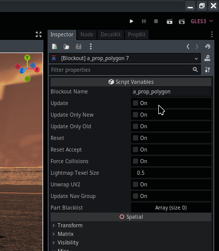
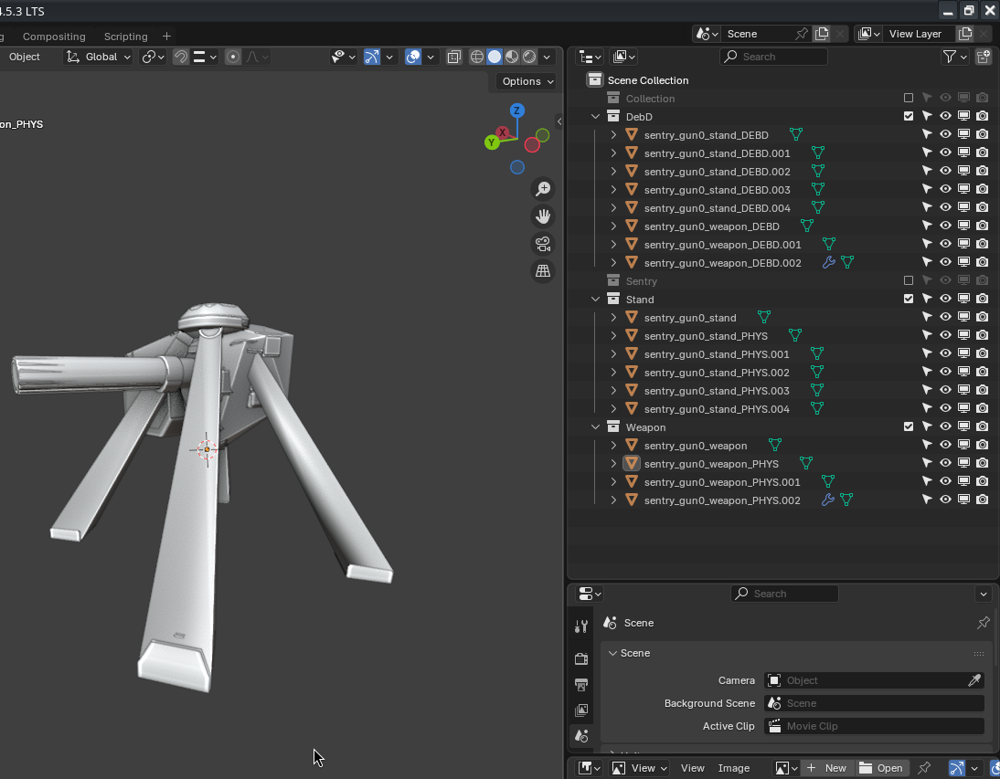

Module: locations_tools
Documentation last edited: October 23, 2025 at 14:33 UTC
Description
Итак, предположим, ты использовал Hammer Editor однажды и подумал, что он типо дерьмовый. Тогда ты решаешь, что это охуенная идея превратить Blender в свой инструмент для дизайна уровней. И ты создаёшь весь этот модуль. Проходит достаточно времени, и твоё рассудок угасает, как и тот безудержный оптимизм, который был у тебя, когда ты думал, что Hammer Editor плох. В конце концов, тебе удалось сделать что-то, что ещё хуже. Добро пожаловать в "Locations Tools", дамы и господа.
Эта страница будет в основном инструкцией по использованию этой системы, а не освещением её технических деталей, просто говоря.
Location Blockout
LocationBlockout
- это узел, который даёт тебе возможность проектировать весь уровень только в Blender. Он полезен для огромных уникальных кусков геометрии. Это основа твоего игрового уровня. Этот вид геометрии может быть не таким детализированным, но он формирует layout уровня, поэтому называется "blockout". Его детализация может выходить далеко за пределы просто grayboxing, но эй, мне просто нужно было выбрать какое-нибудь весёлое имя. Этот узел принимает имя твоего blockout, читает экспортированный .glb файл в
"res://locations/blockouts/"
и создаёт узлы
LocationBlockoutMesh
как дочерние от этого узла. Ты можешь настраивать
LocationBlockoutMesh
как пожелаешь для достижения необходимых игровых needs, у них *много* настроек.
Пометки в именах узлов

Ты можешь поместить некоторые теги в имена твоих объектов Blender для быстрой настройки твоих будущих узлов (как ты можешь видеть на первом скриншоте).
_CVX
- Принудительно создаёт optimized выпуклое столкновение на твоём узле.
_NOCOL
- Отключает столкновения.
_PLACE
- Превращает этот кусок в placeholder, который может быть удалён, как только игра запустится.
_OCC
- Превращает этот кусок в узел
Occluder
.
_ROOMBOX
- Превращает этот кусок в
Room
для целей отсечения окклюзии.
_PORTAL
- Превращает этот кусок в
Portal
для целей отсечения окклюзии.
_ROOM
- Дополнительно создаёт узел
Room
используя геометрию этого меша. В отличие от
_ROOMBOX
, он не удаляет меш полностью, делая возможным использование самой геометрии комнаты для occlusion culling.
TODO: РЕАЛИЗОВАТЬ БЫСТРЫЙ РЕЖИМ
_SPEC
- Делает этот
LocationBlockoutMesh
видимым как отдельный узел в "быстром режиме".
Использование в Blender

Плагин BlenderFastTools имеет кучу кнопок, которые ты можешь найти очень *привлекательными*, когда захочешь работать с
LocationBlockout
.
-
"Sync Godot Materials"
создаёт много материалов Blender, которые могут быть назначены твоей геометрии.
- Если ты назначил коллекцию правильно, кнопка
"Export"
в категории
"Blockout Export"
экспортирует твой текущий blockout как .glb для чтения в Godot.
Это всё. Просто как дважды два. В Godot ты просто нажимаешь checkbox
"Update"
в твоём узле
LocationBlockout
, после назначения правильного значения
"Blockout Name"
.

AssetHelper

Location Prop
В то время как
LocationBlockout
предоставляет тебе возможность сделать layout твоей локации,
LocationProp
позволяет тебе добавить больше деталей. Пропы - это повторяющиеся детали, которые можно размещать где угодно. Ты можешь размещать эти пропы где угодно, используя инструмент PropKit:

Пометки в именах узлов

Ты можешь поместить некоторые теги в имена твоих объектов Blender для более точной настройки твоего пропа.
_PHYS
- Статическая выпуклая часть физического тела.
_OCC
- Окклюдер.
_PCLIP
- Вогнутый клип игрока.
_PCLIPCVX
- Выпуклый клип игрока.
_LOD
- LOD версия пропа.
_COL.*
[имя_кости]
*
- Выпуклая часть столкновения, которая привязана к кости скелета.
_DEBD
- Часть обломков, динамическая.
_DEBS
- Часть обломков, статическая.
_PART
- Часть пропа (другой узел
LocationProp
), которая создаётся как дочерняя от этого пропа.
_GLASS
- Оптимизированная стеклянная часть.
Использование в Blender
Плагин BlenderFastTools имеет 2 кнопки, связанные с
LocationProp
.
- Кнопка
"Export"
экспортирует каждый выбранный объект в Blender как отдельные .glb файлы. Ничего слишком классного здесь.
"thing_DEBD"
сохраняется как
"thing_DEBD.glb"
в
"res://locations/props/exported/"
.
- Кнопка
"Export Animated"
позволяет тебе выбрать твой арматур и меш (меш должен быть привязан к арматуру) и затем экспортировать его как анимированный проп.
Если ты хочешь узнать некоторые технические детали, просто загляни в исходный код того, что тебе нужно, и шокируйся. Или нет. Я не знаю, я не твой папочка.
Если ты ищешь дополнительную оптимизацию, просто загляни в документацию модуля
"location_mesh_combiner"
.
General Information
Root directories list
assets, docs, src
Nodes
debris_remove
LocationBlockout
LocationBlockoutFast
LocationBlockoutMesh
location_dynamic_objects
LocationModelTool
LocationPart
LocationPhysicsGlobal
LocationPortal
LocationPrefab
LocationProp
LocationProps
LocationPropFileArchive
LocationShaderCompileView
Classes
Resources
LocationBlockoutMaterialConfig
LocationCollisionData
LocationCollisionDict
LocationPhysicsData
LocationPropConfig
Other Scripts
None